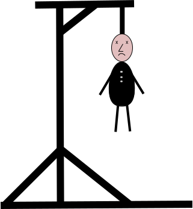

Hangman Game Fact:
In 17th and 18th century Europe, criminals who were sentenced to death by hanging could demand the "Rite of Words and Life." In the "Rite of Words and Life" a criminal to be hanged was strung up over a 5 legged stand, and a board with a series of short ropes representing a word was displayed. The Executioner would pick the word, and would use charcoal to mark correctly guessed letters on the dashes of the board, and incorrect letters to the side. At every incorrect guess the executioner would use a sledge hammer or axe to knock away a single leg of the stand. 5 wrong guesses, and the criminal was hanged. If the entire word was filled in correctly or guessed, the condemned would be set free from that sentence and not tried again on that crime.
Failed Attempts: 0 of 6
Guess the city from UK
Press the "PLAY" button to start the game